MRITTIKA
Brand identity · Assignment
Mrittika
Furniture and desk pieces shaped by hand from natural materials. An identity built around material honesty, quiet utility and calm.

MRITTIKA
Brand identity · Assignment
Furniture and desk pieces shaped by hand from natural materials. An identity built around material honesty, quiet utility and calm.
01 — The brand
MRITTIKA blends sustainable materials with refined aesthetics, creating spaces that breathe calm and conscious luxury.
Born from the earth, the pieces unite form, function and sustainability. The identity had to feel the same way: grounded, quiet and made with care.
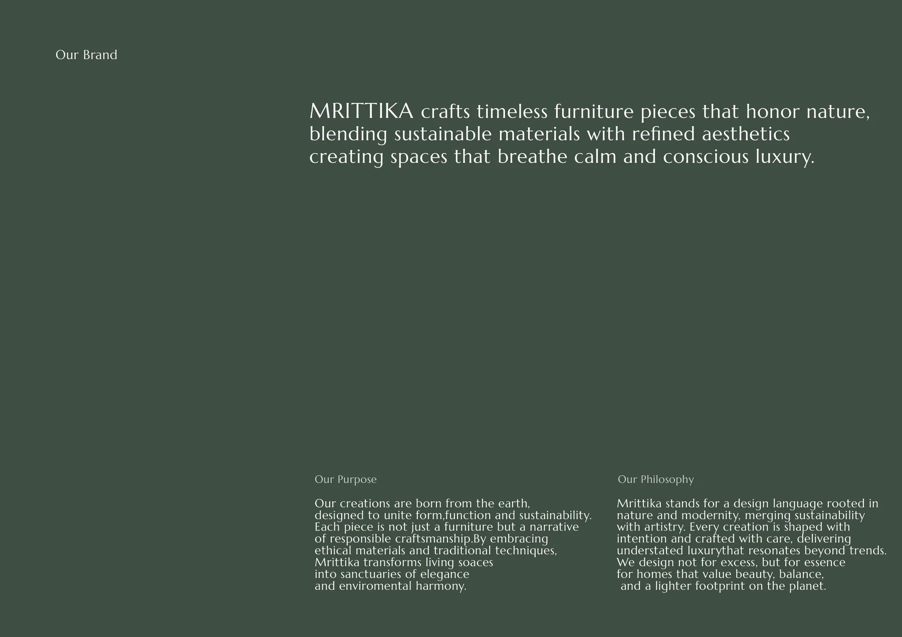
02 — The mark
A square holding two arcs that rise and part, the earth and what grows from it. Used solid, debossed or embossed, it stays calm.
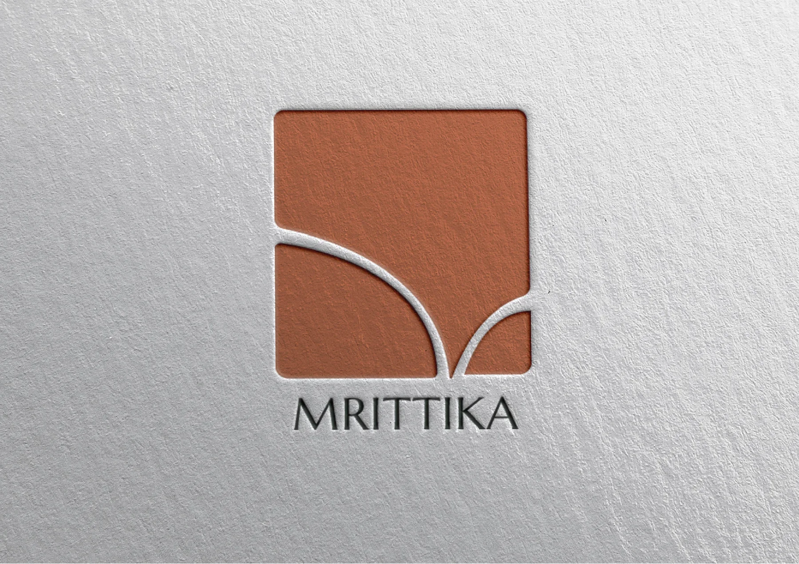
03 — Colour and type
The palette is atmospheric and material: terracotta, blush, stone grey and a deep green. Colours that create space.
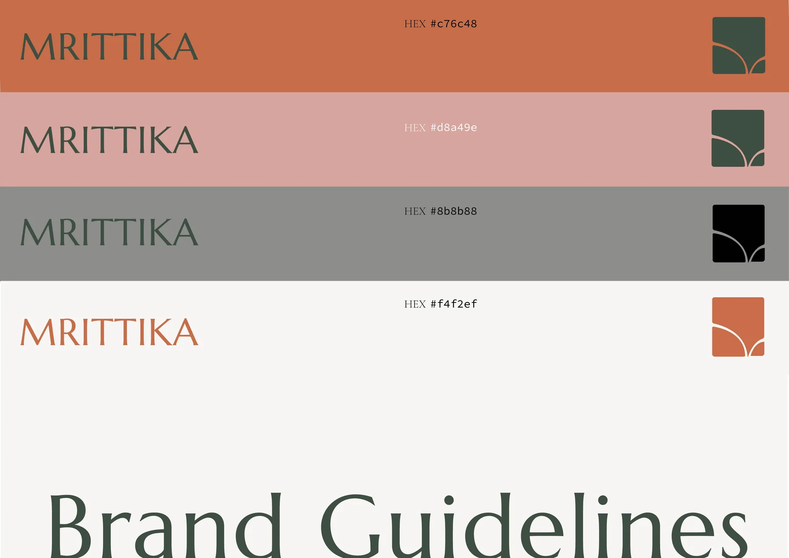
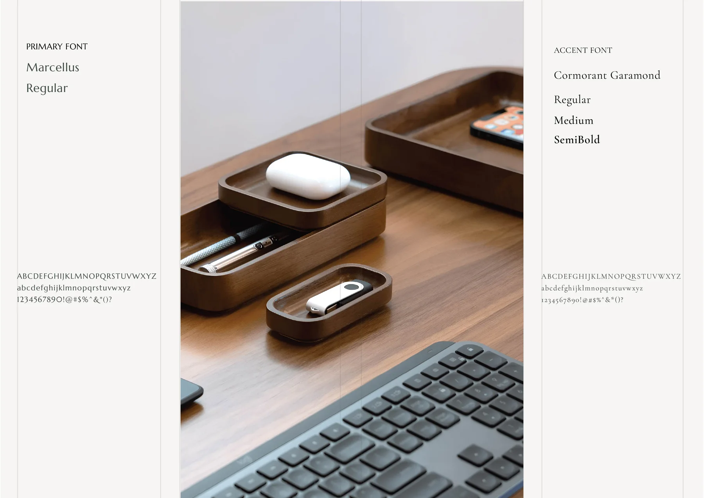
04 — Imagery
Imagery reflects sustainable design, organic elegance and material integrity. Emotional warmth through earthy tones, never sterile minimalism.
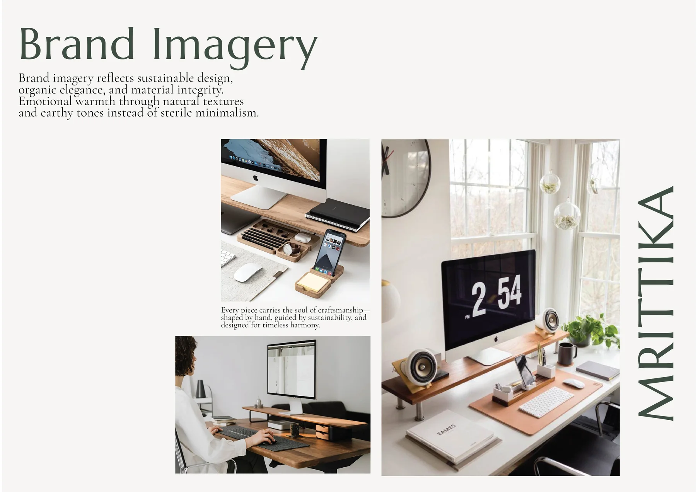
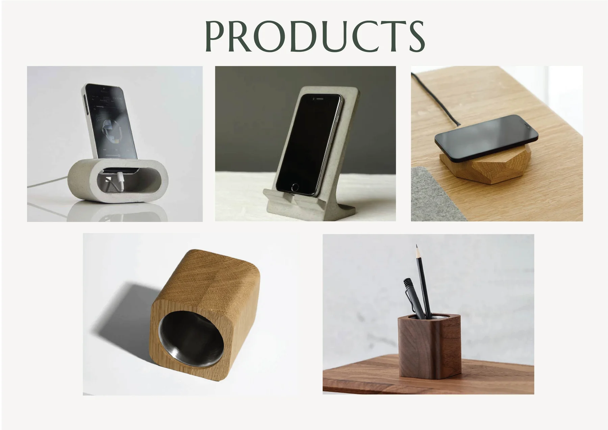
05 — Applications
The identity applied across packaging, print and digital: shipping boxes and tape, mailer cards with QR codes, a tote, a lookbook and the web store.
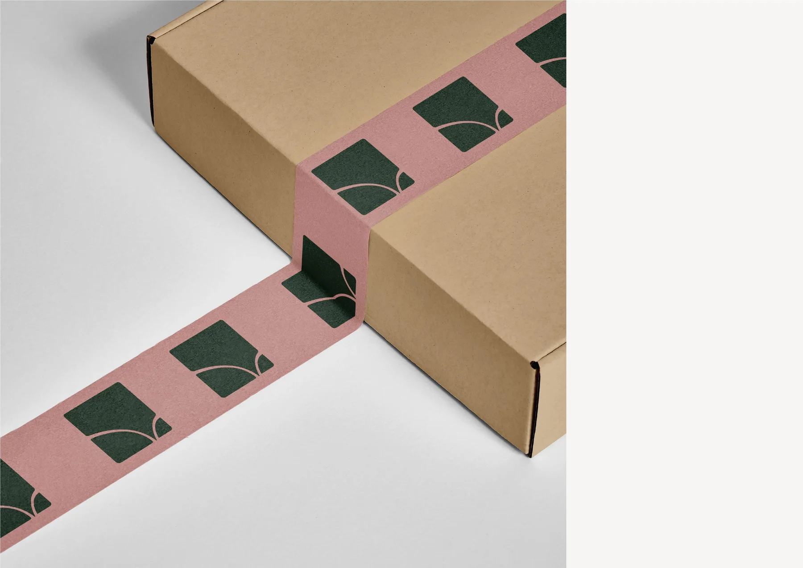
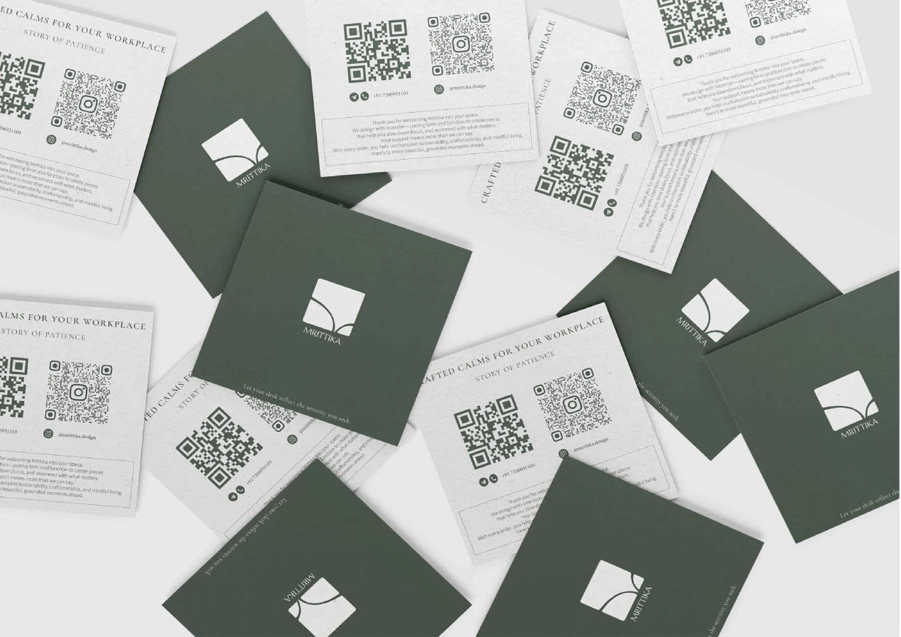
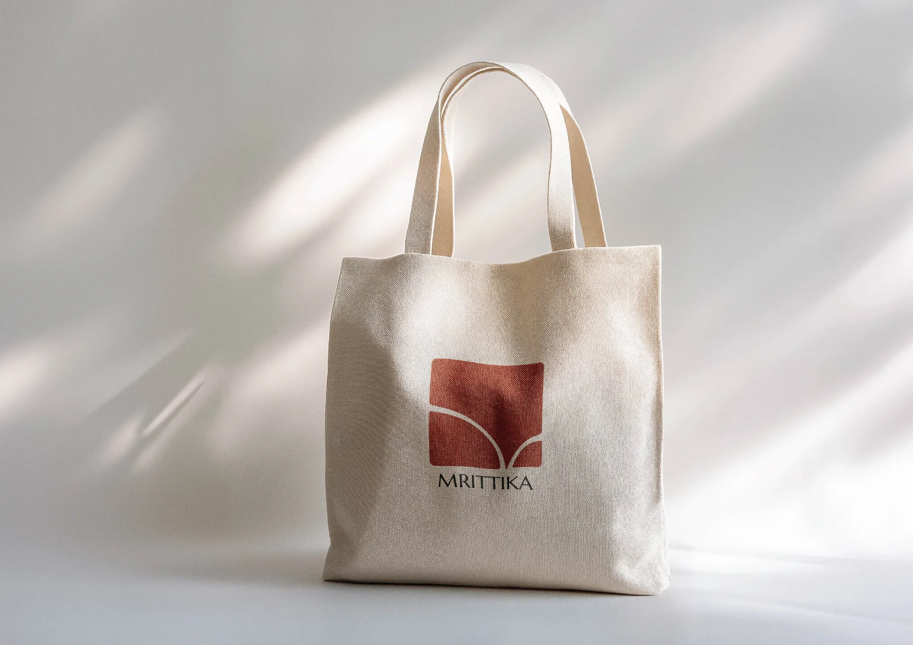
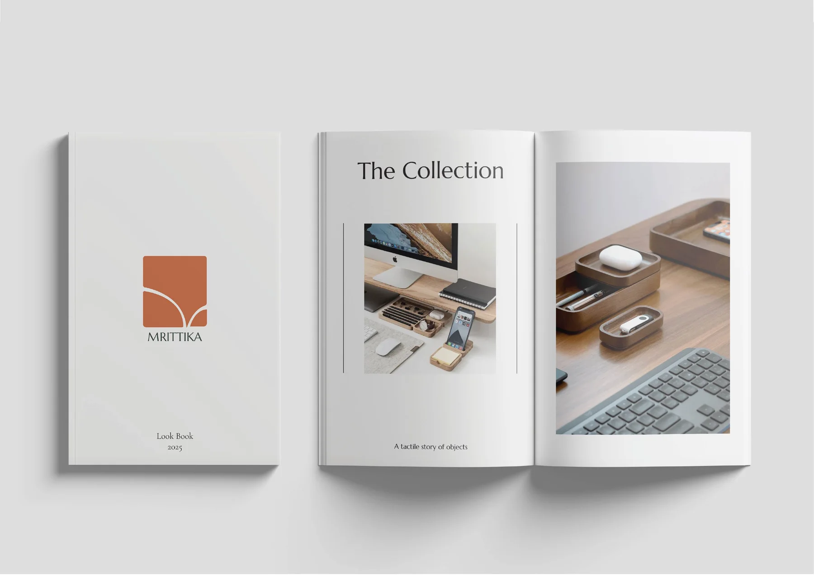
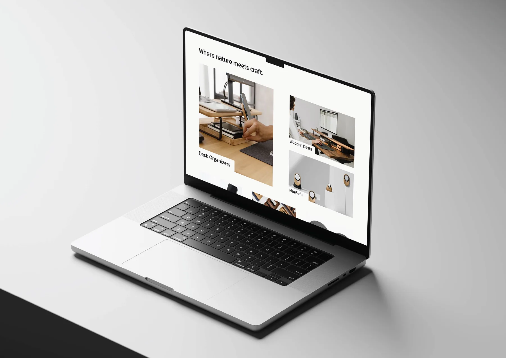
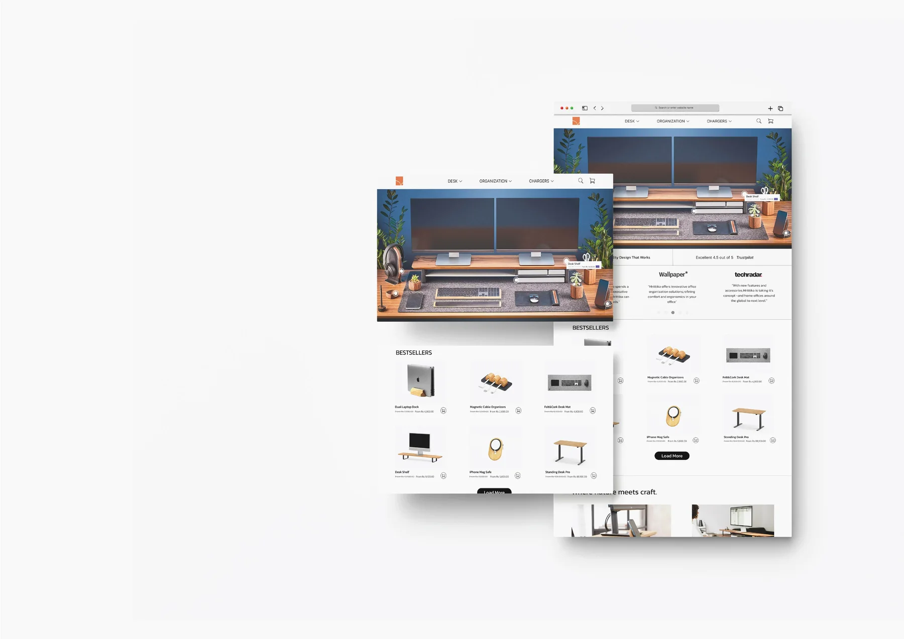
That was Mrittika
That is the branding work for now. Back to the gallery, or let us talk about yours.